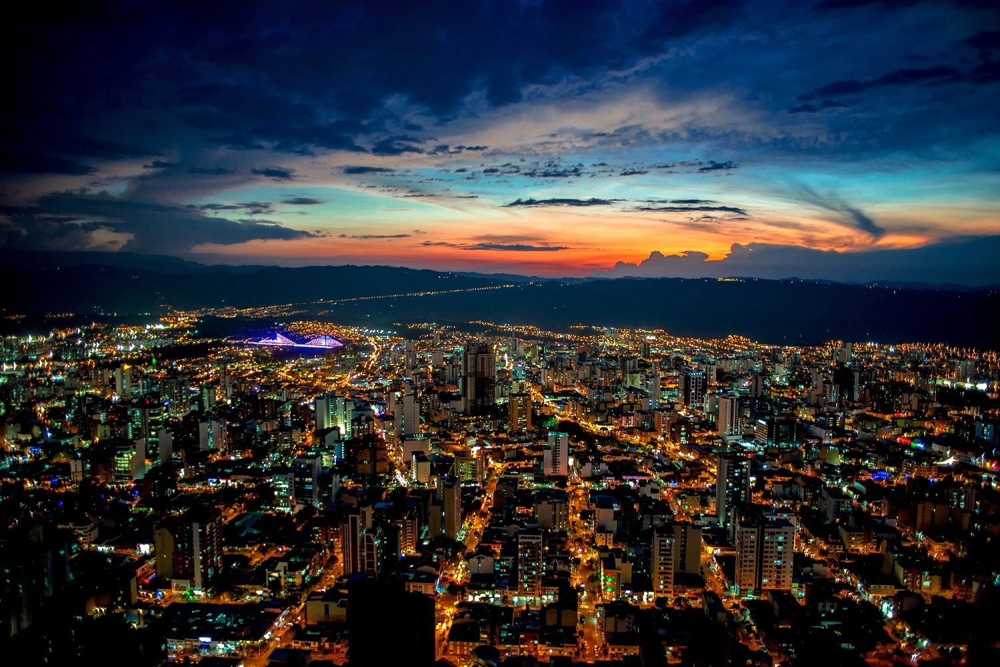
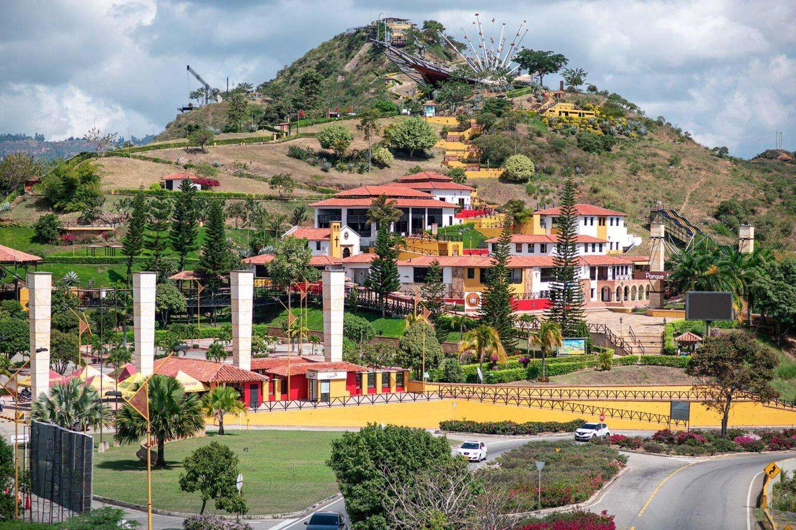
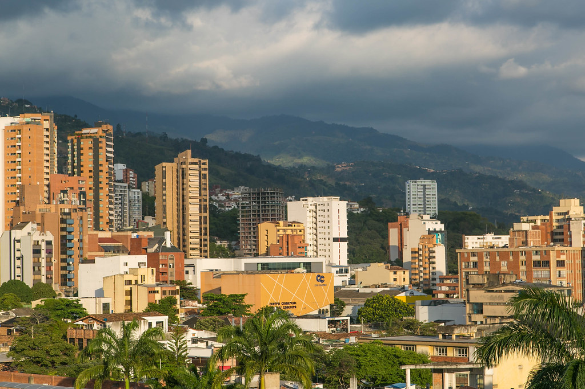
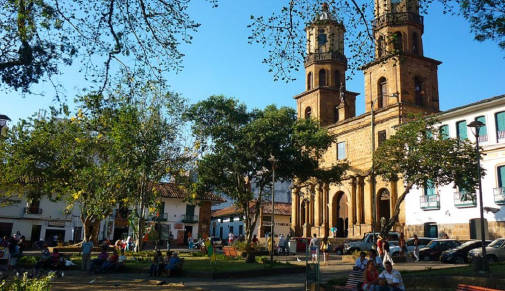
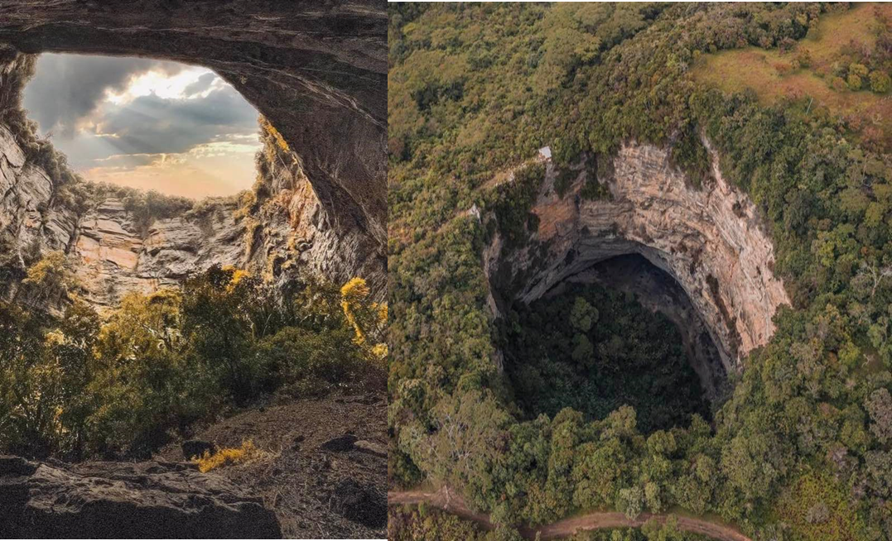

Santander

Informacion
Santander es un departamento ubicado en la región nororiental de Colombia, conocido por su rica historia, cultura y belleza natural.
La capital del departamento es Bucaramanga, una ciudad moderna rodeada de montañas y parques naturales. Santander es famoso por sus
paisajes montañosos, cañones y ríos, lo que lo convierte en un destino popular para actividades al aire libre como el senderismo,
el parapente y el rafting. La región también tiene una fuerte tradición cultural, con festivales, música y gastronomía que reflejan
la herencia de sus habitantes.
Comida Típica
La gastronomía de Santander colombiano es rica y variada, influenciada por las tradiciones andinas y los recursos naturales de la región.
Algunos platos típicos incluyen:
- Hormiga Culona: Un manjar tradicional hecho con hormigas grandes tostadas y saladas, consideradas una delicia en la región.
- Mute: Una sopa espesa hecha con maíz, carne (generalmente cerdo o res), verduras y especias.

- Arepa Santandereana: Una variante de la arepa tradicional, hecha con maíz pilado y a menudo rellena con queso o carne.
.jpeg)
- Cabrito: Carne de cabra asada, una delicia típica de la región santandereana.
.jpeg)
- Obleas: Un postre popular hecho con dos finas galletas rellenas de arequipe (dulce de leche)
y a veces con queso o frutas.
.jpeg)
Turismo
Santander colombiano ofrece una variedad de atractivos turísticos para los visitantes interesados
en la naturaleza, la aventura y la cultura. Algunos de los principales destinos
turísticos incluyen:
- Parque Nacional del Chicamocha: Un impresionante cañón que ofrece actividades como el parapente, el senderismo y un teleférico con vistas panorámicas.

- Bucaramanga: La capital del departamento, conocida por sus parques, plazas y arquitectura colonial.

- Barichara: Un pintoresco pueblo colonial famoso por sus calles empedradas, arquitectura bien conservada y artesanías locales.
.jpeg)
- San Gil: Conocida como la capital de la aventura en Colombia, ofrece actividades como el rafting, el parapente y la escalada.

- Hoyo del Aire: Una formación geológica natural que crea un efecto de eco impresionante, ubicada cerca de San Gil.

Economia
La economía de Santander colombiano está diversificada, con sectores clave que incluyen la
agricultura, la ganadería, la industria y el turismo. La agricultura es una actividad
importante en la región, con cultivos como el café, el cacao, el maíz y la yuca. La ganadería
también es significativa, especialmente la cría de ganado bovino y porcino. La industria en Santander
incluye la producción de alimentos, textiles y productos químicos. El turismo es un sector en crecimiento,
impulsado por los atractivos naturales y culturales de la región, que atraen a visitantes nacionales e internacionales.